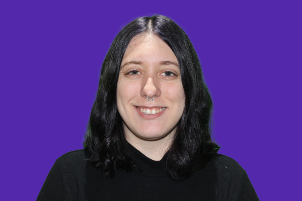

About me
Hello, My name is Catherine Legault but you can call me Cat. I am a 27 year old designer, born on January 21st, 1998. I graduated Algonquin College in 2019. Worked for five different companies 2019-2024 such as Cyan Solutions, Algonquin College Marketing Department, Invest Ottawa, and recently Laughing Dragon Studios in Montreal from 2022-2024. I volunteered for the Liberal Party as a photographer and currently volunteering for the Ottawa International Animation Festival. I have a dog name Winston and a cat name Sophie. I moved around a lot, I was born in Quebec and stayed for the first five years, moved to Mississauga for eight years, then Ottawa for ten years, only lived in Montreal for two years, then moved BACK to Ottawa this year to go to school.
